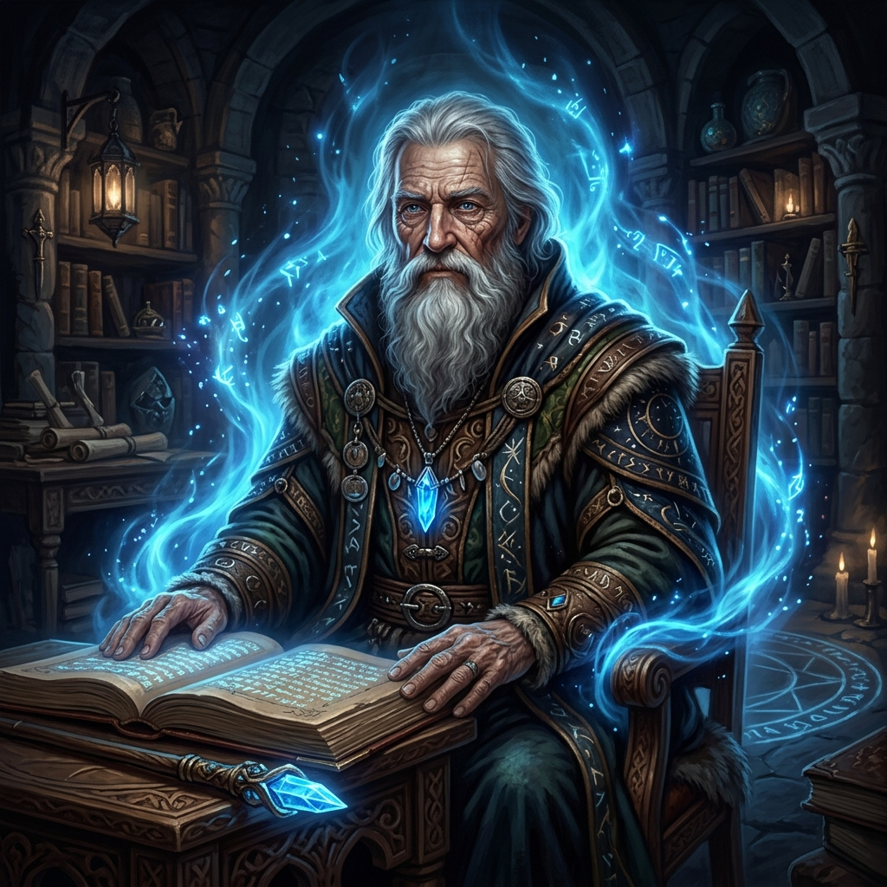
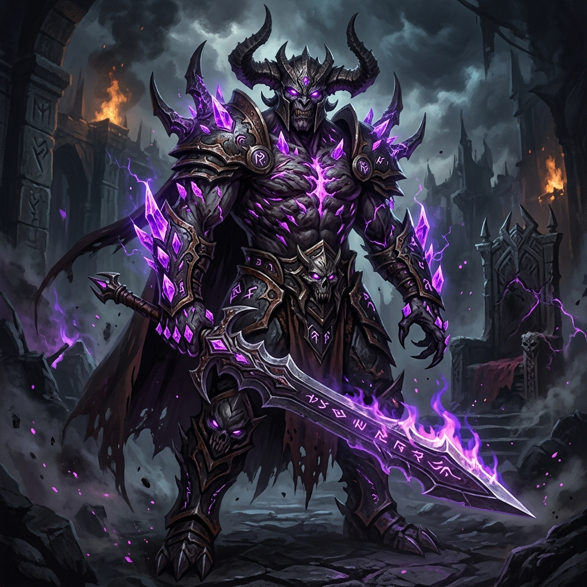

Figuras Lendárias

Nymir
O Arquiteto do Equilíbrio
Nymir
Um sábio e contemplativo mago que enxergava a magia não como poder, mas como o balanço natural da vida. Sacrificou sua própria existência após uma batalha devastadora para selar o mal no Vale da Bruma.
Segunda Era
Velmorak
O Deus Adormecido
Velmorak
Um tirano outrora mortal cuja ganância o transformou em um semideus profano. Foi selado por Nymir, mas sua energia corrompeu a terra, gerando os nefastos Cristais de Velmorak.
Segunda EraArum
O Enigma da Bruma
Arum
Um nome que desapareceu misteriosamente entre 600 e 720 SE. Pouco se sabe sobre suas intenções, mas sua sombra paira sobre as lendas perdidas do Bastião de Eldarion.
DesconhecidoA Linha do Tempo
560 SE - Ascensão da Magia
Nymir consolida seu poder, e as primeiras anomalias começam a surgir nas montanhas. O minério conhecido como Runita é descoberto.
600 SE - O Império Demoníaco
Velmorak completa rituais de imortalidade e se torna um demônio pleno. Escravidão e corrupção dominam o vale.
724 SE - O Selamento
A batalha final. Nymir sela Velmorak sob o solo. Luzes rasgam o céu por três dias. Nymir desaparece e encerra a Segunda Era.
723 TE - Registros de Wellen
Jacob Wellen compila as "Crônicas Ocultas do Vale da Bruma", resgatando memórias perdidas da Segunda Era.
842 TE - O Despertar (Ano Atual)
A magia antiga retorna. Cristais de Velmorak corrompem a terra e o culto do Deus Adormecido inicia rituais de sacrifício. Os aventureiros chegam ao Vale...
Cristais de Velmorak
Fragmentos da essência maligna cristalizados sob o solo. Concedem poder obscuro, mas cobram a alma e a vontade como preço.
Runita
Um minério denso e incrivelmente resistente, famoso por sua total falta de propriedades mágicas, funcionando quase como um isolante natural.